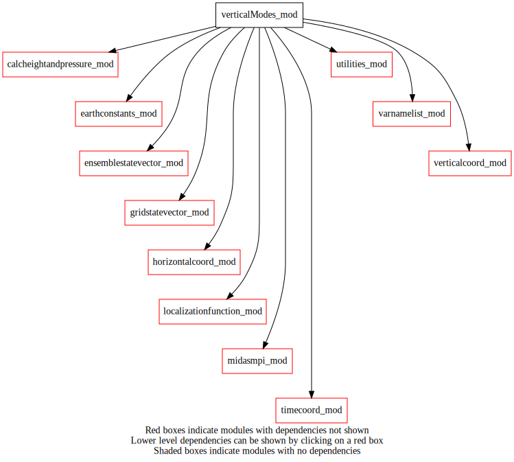
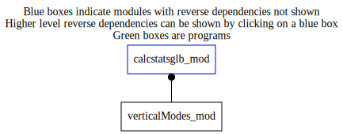

verticalModes_mod¶
Dependency Diagrams:
 Direct Dependency Diagram¶
 Reverse Dependency Diagram¶
Description
MODULE verticalModes_mod (prefix=’vms’ category=’4. Data Object transformations’)
- Purpose
To 1) compute empirical orthogonal functions (EOFs) from either ensemble-derived vertical background-error covariances matrices or a prescribed vertical correlation function (i.e., the so-called vertical modes) and to 2) project back or forth ensemble pertubations onto these modes. Therefore, capablity #2 behaves like a spectral transform but in the vertical dimension.
Quick access
- Variables
- Routines
vms_computemodes(),vms_computemodesfromens(),vms_computemodesfromfunction(),vms_setup(),vms_transform(),vms_writemodes(),writearray1d_c4(),writearray1d_r8(),writematrix2d_r8()Needed modules
earthconstants_mod: MODULE earthConstants_mod (prefix=’ec’ category=’8. Low-level utilities and constants’)
utilities_mod: MODULE utilities_mod (prefix=’utl’ category=’8. Low-level utilities and constants’)
varnamelist_mod: MODULE varNameList_mod (prefix=’vnl’ category=’7. Low-level data objects’)
horizontalcoord_mod: MODULE horizontalCoord_mod (prefix=’hco’ category=’7. Low-level data objects’)
verticalcoord_mod: MODULE verticalCoord_mod (prefix=’vco’ category=’7. Low-level data objects’)
localizationfunction_mod: MODULE localizationFunction_mod (prefix=’lfn’ category=’2. B and R matrices’)
calcheightandpressure_mod: MODULE calcHeightAndPressure_mod (prefix=’czp’ category=’4. Data Object transformations’)
gridstatevector_mod: MODULE gridStateVector_mod (prefix=’gsv’ category=’6. High-level data objects’)
ensemblestatevector_mod: MODULE ensembleStateVector_mod (prefix=’ens’ category=’6. High-level data objects’)
timecoord_mod: MODULE timeCoord_mod (prefix=’tim’ category=’7. Low-level data objects’)
midasmpi_mod: MODULE midasMpi_mod (prefix=’mmpi’ category=’8. Low-level utilities and constants’)Types
- type verticalmodes_mod/unknown_type¶
- Type fields
% autocovariance (*,*) [real ,allocatable]
% eigenvalues (*) [real ,allocatable]
% eigenvectors (*,*) [real ,allocatable]
% eigenvectorsinv (*,*) [real ,allocatable]
% nlev [integer ]
% varname [character ]
- type verticalmodes_mod/unknown_type
Variables
- verticalmodes_mod/struct_vms [public]¶
Subroutines and functions
- subroutine verticalmodes_mod/vms_setup(varnameslist, vco, vmodes)¶
- Purpose
To setup the vModes structure
- Arguments
varnameslist (*) [character ,in]
vco [struct_vco ,in,pointer]
vmodes [struct_vms ,inout]
- Called from
- Call to
- subroutine verticalmodes_mod/vms_computemodesfromens(ensperts, vmodes)¶
- Purpose
To compute vertical modes from ensemble-derived vertical background-error covariances matrices
- Arguments
ensperts [struct_ens ,inout]
vmodes [struct_vms ,inout]
- Call to
ens_varnameslist(),ens_getvco(),vms_setup(),ens_getnummembers(),ens_gethco(),ens_getlatlonbounds(),ens_getoffsetfromvarname(),ens_getonelev_r4(),mmpi_allreduce_sumr8_2d(),vms_computemodes()
- subroutine verticalmodes_mod/vms_computemodesfromfunction(vco, lengthscaletop, lengthscalebot, vmodes)¶
- Purpose
To compute vertical modes from a prescribed correlation function
- Arguments
vco [struct_vco ,in,pointer]
lengthscaletop [real ,in]
lengthscalebot [real ,in]
vmodes [struct_vms ,inout]
- Called from
- Call to
vms_setup(),lfn_setup(),vnl_varlevelfromvarname(),lfn_response(),vms_computemodes()
- subroutine verticalmodes_mod/vms_computemodes(vmodes)¶
- Purpose
Compute vertical modes from the vertical covariances matrices contained in the vModes structure.
- Arguments
vmodes [struct_vms ,inout]
- Called from
- Call to
- subroutine verticalmodes_mod/vms_transform(vmodes, vertmodesstate, gridstate, transformdirection, lonbeg, lonend, latbeg, latend, nlev, varname)¶
- Purpose
To project back or forth ensemble pertubations onto the vertical modes contained in the vModes structure.
- Arguments
vmodes [struct_vms ,in]
vertmodesstate (lonend-lonbeg+1,latend-latbeg+1,nlev) [real ,inout] :: 3D vertical modes coefficients
gridstate (lonend-lonbeg+1,latend-latbeg+1,nlev) [real ,inout] :: 3D field in grid point space
transformdirection [character ,in] :: VertModesToGridPoint or GridPointToVertModes
lonbeg [integer ,in]
lonend [integer ,in]
latbeg [integer ,in]
latend [integer ,in]
nlev [integer ,in,]
varname [character ,in]
- Called from
- Call to
- subroutine verticalmodes_mod/vms_writemodes(vmodes)¶
- Purpose
To write the content of the provided vModes structure
- Arguments
vmodes [struct_vms ,in]
- Called from
- Call to
utl_abort(),writematrix2d_r8(),writearray1d_r8(),writearray1d_c4()
- subroutine verticalmodes_mod/writematrix2d_r8(matrix2d, rank_bn, iun, nomvar_in, etiket_in)¶
- Purpose
To write a 2D matrix rank x rank
- Arguments
matrix2d (rank_bn,rank_bn) [real ,in]
rank_bn [integer ,in,]
iun [integer ,in]
nomvar_in [character ,in]
etiket_in [character ,in]
- Called from
- subroutine verticalmodes_mod/writearray1d_r8(array, size_bn, iun, nomvar_in, etiket_in)¶
- Purpose
To write a 1D array in real 8
- Arguments
array (size_bn) [real ,in]
size_bn [integer ,in,]
iun [integer ,in]
nomvar_in [character ,in]
etiket_in [character ,in]
- Called from
- subroutine verticalmodes_mod/writearray1d_c4(array, size_bn, iun, nomvar_in, etiket_in)¶
- Purpose
To write a 1D array in character with len = 4
- Arguments
array (size_bn) [character ,in]
size_bn [integer ,in,]
iun [integer ,in]
nomvar_in [character ,in]
etiket_in [character ,in]
- Called from
{kind=link}
{kind=link}